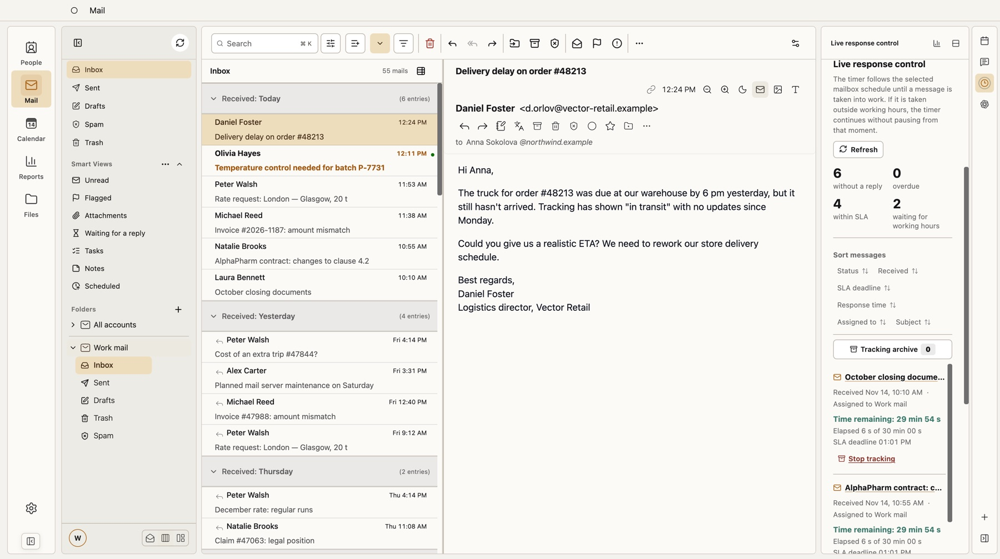

New Outlook and on-prem Exchange: what to use instead
Microsoft is moving Windows and Mac users from classic Outlook to “new Outlook”, which is built around Microsoft 365 and cloud accounts. If your mail server is still on-premises Exchange, check what your version supports before you switch, and keep a fallback. Disclosure: I build Jackdaw Mail, one of the alternatives listed below.
Before you switch
- Check your account type. Open the new client with a test profile and confirm that mail, calendar, contacts and shared mailboxes all load from your server, not just mail.
- Keep classic Outlook available until you have tested the features you rely on: rules, delegates, send-as, out-of-office, room booking.
- Ask your admin which protocols are enabled on the server: OWA, EWS, ActiveSync, IMAP. This decides which third-party clients can connect at all.
Options on a desktop
- Classic Outlook while your version still supports it. Check Microsoft's current support dates.
- Outlook on the web (OWA) in a browser. Works everywhere, but no offline mode and no native notifications.
- Apple Mail / Thunderbird. Fine for mail. Calendar, shared mailboxes and server rules often need add-ons or are missing.
- Jackdaw Mail. A desktop client for macOS 12+ and Windows 10/11 that connects over OWA, EWS and ActiveSync, with shared mailboxes, send-as, out-of-office, server rules, tasks and room booking. New mail arrives through Exchange push notifications.
What Jackdaw adds
- Reply time measured in working minutes, an unanswered queue, and reports (Pro).
- Mail goes directly from your computer to your server, not through our servers.
- Open-source client (EUPL-1.2), 43 interface languages.

Limits
- Microsoft is retiring EWS for Exchange Online (Microsoft 365). Jackdaw targets on-premises Exchange and OWA; Microsoft 365 support is not complete.
- Builds are unsigned by Apple and Microsoft, so the first launch shows a warning. The code is open and builds run in public GitHub Actions.
- No Linux build yet.
Price
Free for one mailbox. Pro: $9.99 per month or $79.99 per year per seat, 7-day trial without a card.